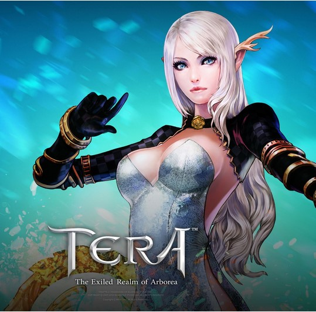

Jogue com o menor ping e o melhor desempenho.
Você está pronto para uma experiência de jogo incrível? Venha jogar no LaTera, servidor hospedado no Brasil! Com latência baixa e alto desempenho, você poderá jogar de igual para igual com outros jogadores, sem se preocupar com problemas de latência. Além disso, nosso servidor é totalmente personalizável, permitindo nossas próprias regras e modos de jogo. Não perca mais tempo jogando em servidores Bugados cheios de problemas, venha jogar conosco e experimente a verdadeira emoção de jogar TERA! junte-se a nós agora e desfrute de uma aventura incrível!

Ping baixo 5~20
Comunidade e GMs ativos!
Server personalizado!